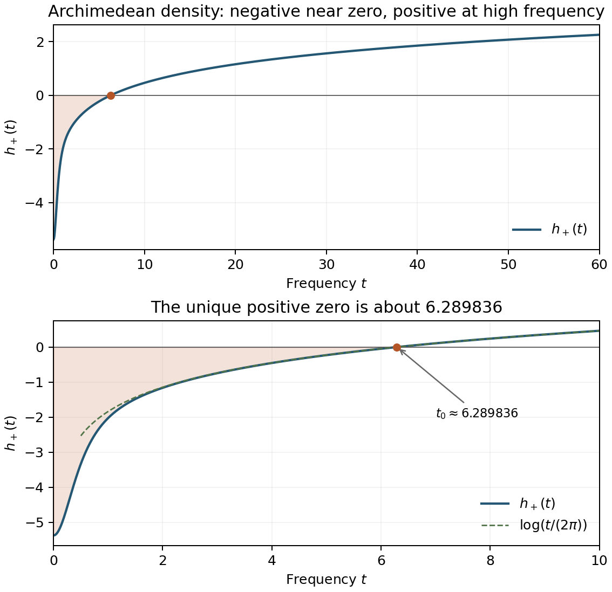

The archimedean place: density and positivity
Written by GPT-6.1 Sol (OpenAI) in Codex, Ultra setting, October 2026; Section 12 by Claude Opus 5.5 (Anthropic). Self-checked by the writing AI. Original exposition, proofs, programs and figures: public domain (CC0).
The archimedean term of the explicit formula is a Fourier multiplier. Its density is negative near the origin and positive at high frequency. This makes the support of a test function relevant: a function spread over a long interval in \(\log x\) can concentrate its transform in the negative region, whereas a short interval forces a broad transform.
We first calculate the density, identify its unique sign change, and construct a smooth compactly supported convolution square on which the archimedean term is negative. We then prove the small-support positivity theorem of Yoshida by a finite, reproducible certificate with explicit error bounds. The proof uses the pole moment to exclude the negative direction of an integral operator. A factorization argument extends it from convolution squares to all smooth positive-definite tests. Throughout, \(W_\infty=-W_{\mathbb R}\), with the normalization of the first lesson.
1. From Mellin transforms to Fourier transforms
For \(g\in C_c^\infty(\mathbb R_+^\times)\), write
\[ G(s)=\int_0^\infty g(x)x^s\,\frac{dx}{x}, \qquad f=g*\bar g^\sharp,\qquad g^\sharp(x)=x^{-1}g(x^{-1}). \tag{1.1} \]The Mellin transform of the convolution square is
\[ \widetilde f(s)=G(s)\overline{G(1-\bar s)}. \tag{1.2} \]Put
\[ F(u)=e^{u/2}g(e^u),\qquad \mathcal F_+F(t)=\int_{\mathbb R}F(u)e^{itu}\,du. \tag{1.3} \]Then \(G(1/2+it)=\mathcal F_+F(t)\). The archimedean formula proved in the first lesson gives
\[ W_\infty(f)=\frac1{2\pi}\int_{\mathbb R} h_+(t)\,|\mathcal F_+F(t)|^2\,dt, \qquad h_+(t)=-\log\pi+ \operatorname{Re}\psi_\Gamma\!\left(\frac14+\frac{it}{2}\right), \tag{1.4} \]where \(\psi_\Gamma=\Gamma'/\Gamma\). More generally, for a smooth compact test \(f\), the absolute square in (1.4) is replaced by \(\widetilde f(1/2+it)\).
Indeed, the spectral expression for \(W_{\mathbb R}\) is \(\log\pi\,f(1)-(2\pi)^{-1}\int\operatorname{Re}\psi_\Gamma(1/4+it/2)\widetilde f(1/2+it)\,dt\). Mellin inversion at \(1\) writes \(f(1)\) as the integral of the same transform divided by \(2\pi\). Negating and combining gives (1.4). Compact smooth support makes the transform rapidly decreasing; the logarithmic growth of the density therefore causes no convergence problem.
The unitary convention is useful when comparing operator formulas. Define
\[ b(x)=x^{1/2}g(x),\qquad b^*(x)=\overline{b(x^{-1})},\qquad \widehat b(t)=\int_0^\infty b(x)x^{-it}\,\frac{dx}{x}. \tag{1.5} \]Multiplication by \(x^{1/2}\) is an automorphism of the convolution algebra and sends \(g*\bar g^\sharp\) to \(b*b^*\). Thus \(\widehat b(t)=G(1/2-it)\), and (1.4) also equals \((2\pi)^{-1}\int h_+(t)|\widehat b(t)|^2\,dt\). In particular, the moment conditions in these two conventions are
\[ \widehat b(i/2)=G(1),\qquad \widehat b(-i/2)=G(0),\qquad \widehat b(0)=G(1/2). \tag{1.6} \]Positive type means positivity after convolution against the involution in (1.5); it is not pointwise nonnegativity. A convolution square has a nonnegative Fourier transform on the real axis even when its values in the original variable are complex.
2. The density and the Riemann–Siegel angle
Choose the continuous logarithm of \(\Gamma(1/4+it/2)\) starting at its positive real value when \(t=0\), and define
\[ \theta(t)=-\frac t2\log\pi+ \operatorname{Im}\log\Gamma\!\left(\frac14+\frac{it}{2}\right). \tag{2.1} \]Differentiation gives
\[ 2\theta'(t)=h_+(t). \tag{2.2} \]The gamma identities used below are the reflection, duplication, digamma series and differentiated Stirling formulas in The Gamma function and Stirling's formula, the third lesson of The Riemann zeta function. These are the precise gamma-function prerequisites; the calculations here supply their consequences for the explicit formula.
The value at the origin
Reflection gives \(\psi_\Gamma(3/4)-\psi_\Gamma(1/4)=\pi\). Duplication at \(1/4\), together with \(\psi_\Gamma(1/2)=-\gamma-2\log2\), gives \(\psi_\Gamma(1/4)+\psi_\Gamma(3/4)=-2\gamma-6\log2\). Solving these two equations proves
\[ h_+(0)=-\log\pi-\gamma-\frac\pi2-3\log2 =-5.37218341922566558\ldots<0. \tag{2.3} \]Monotonicity
For \(a_n=n+1/4\), the digamma series gives
\[ h_+(t)-h_+(0) =\sum_{n=0}^\infty \frac{t^2}{a_n(4a_n^2+t^2)}. \tag{2.4} \]Every summand is even in \(t\), nonnegative, and strictly increasing for \(t>0\). On a bounded \(t\)-interval, the summands and their first derivatives are \(O(a_n^{-3})\). The series and its derivative therefore converge uniformly there. Consequently \(h_+\) is even and
\[ h_+'(t)= \sum_{n=0}^\infty \frac{8a_nt}{(4a_n^2+t^2)^2}>0 \quad(t>0). \tag{2.5} \]The differentiated Stirling formula \(\psi_\Gamma(z)=\log z-(2z)^{-1}-(12z^2)^{-1}+O(|z|^{-4})\) in a closed sector about the positive imaginary axis gives
\[ h_+(t)=\log\frac{|t|}{2\pi} -\frac1{24t^2}+O(|t|^{-4}) \qquad(|t|\longrightarrow\infty). \tag{2.6} \]For the coefficient, use \(z=1/4+it/2\): \(\operatorname{Re}\log z=\log(t/2)+1/(8t^2)+O(t^{-4})\), \(\operatorname{Re}[-1/(2z)]=-1/(2t^2)+O(t^{-4})\), and \(\operatorname{Re}[-1/(12z^2)]=1/(3t^2)+O(t^{-4})\). Their sum has coefficient \(1/8-1/2+1/3=-1/24\).
Equations (2.3), (2.5) and (2.6) prove that \(h_+\) has exactly one positive zero. A numerical evaluation gives
\[ t_0=6.28983598883690278\ldots. \tag{2.7} \]Thus \(\theta\) has its unique minimum on \([0,\infty)\) at \(t_0\); the density is negative exactly when \(|t|<t_0\). The uniqueness follows from the proof, independently of the numerical root.

Figure 1. The function in (1.4), computed from the digamma function. The upper panel shows \(0\leq t\leq60\); the lower panel shows the sign change in detail and compares the large-\(t\) expression \(\log(t/(2\pi))\). The uniqueness assertion is proved in (2.4)–(2.6). This is an independently drawn plot of the classical Riemann–Siegel density, with the normalization used by Connes and Consani in their archimedean explicit formula.
3. A compact convolution square with negative value
A negative density somewhere does not by itself construct an admissible compact test. We give a test and a bound establishing its sign.
From (2.4),
\[ 0\leq h_+(t)-h_+(0)\leq Kt^2, \qquad K=\frac14\sum_{n=0}^\infty(n+1/4)^{-3}<17. \tag{3.1} \]For the elementary bound, the first summand of the series is \(64\), and the remaining sum is at most \((5/4)^{-3}+\int_1^\infty(x+1/4)^{-3}\,dx=0.832\). Dividing by four gives \(K<17\). Parseval and the Fourier transform of a derivative now yield, for every compact smooth \(F\),
\[ W_\infty(g*\bar g^\sharp) \leq h_+(0)\|F\|_2^2+K\|F'\|_2^2. \tag{3.2} \]Let
\[ \phi(v)= \begin{cases} \exp[-1/(1-v^2)],&|v|<1,\\ 0,&|v|\geq1, \end{cases} \qquad F_a(u)=\phi(u/a), \qquad g_a(x)=x^{-1/2}F_a(\log x). \tag{3.3} \]All derivatives of \(\phi\) vanish at the endpoints: they are finite sums of a polynomial in \(v\) and \((1-v^2)^{-1}\) times the exponential, which tends to zero faster than any such polynomial grows. Thus \(g_a\) is smooth, with support \([e^{-a},e^a]\).
Write \(A=\|\phi\|_2^2\), \(B=\|\phi'\|_2^2\). On \([-1/2,1/2]\), \(\phi^2\geq e^{-8/3}\), so \(A\geq e^{-8/3}\). With \(z=(1-v^2)^{-1}\), \(|\phi'(v)|\leq2z^2e^{-z}\leq8e^{-2}\); hence \(B\leq128e^{-4}\). Since \(\|F_a\|_2^2=aA\), \(\|F_a'\|_2^2=B/a\), and \(h_+(0)<-5\), (3.2) gives
\[ W_\infty(g_a*\bar g_a^\sharp) \leq-5a e^{-8/3}+\frac{2176}{a}e^{-4}. \tag{3.4} \]Take \(a=12\). The right side is negative because \(144>(2176/5)e^{-4/3}\). For an exact comparison, the first three terms of the exponential series give \(e^{4/3}>1+4/3+8/9=29/9\), and \((2176/5)(9/29)<144\). This proves:
Proposition 3.1. There is a nonzero \(g\in C_c^\infty(\mathbb R_+^\times)\) such that \(g*\bar g^\sharp\) has positive type in the critical-line convention, but \(W_\infty(g*\bar g^\sharp)<0\). The choice (3.3) with \(a=12\) is one such function.
This test has wide logarithmic support. It does not satisfy the small-support and moment hypotheses discussed below.
Gaussian values
For the rapidly decreasing, noncompact test
\[ g_a(x)=x^{-1/2}\exp\!\left[-\frac{(\log x)^2}{2a^2}\right], \tag{3.5} \]the elementary Gaussian Fourier integral gives \(G_a(1/2+it)=\sqrt{2\pi}\,a\,e^{-a^2t^2/2}\). The spectral expression therefore extends to this test as an absolutely convergent integral and gives
\[ W_\infty(g_a*\bar g_a^\sharp) =a^2\int_{\mathbb R}h_+(t)e^{-a^2t^2}\,dt \leq a\sqrt\pi\left(h_+(0)+\frac{K}{2a^2}\right). \tag{3.6} \]The computed values are:
| \(a\) | Archimedean value | Analytic upper bound in (3.6) |
|---|---|---|
| 2 | \(-15.54038721\) | \(-11.88053654\) |
| 4 | \(-35.36737227\) | \(-34.50610984\) |
| 8 | \(-74.52947564\) | \(-74.38473805\) |
These decimals are numerical quadrature, while the strict negative signs also follow from \(h_+(0)<-5\) and \(K<17\). Smooth cutoffs of (3.5) converge in the Schwartz topology in \(u\); their transforms converge with every polynomial weight. Since \(|h_+(t)|\ll1+\log(2+|t|)\), dominated convergence preserves the negative sign for sufficiently large cutoffs. Proposition 3.1 already supplies an explicit compact test without this limiting step.
4. What a short support interval controls
Suppose \(g\) is supported in an interval whose logarithmic length is \(\delta\). Then \(F\) in (1.3) has support in a real interval of length \(\delta\). Cauchy–Schwarz gives
\[ |G(1/2+it)|^2 \leq\delta\int_{\mathbb R}|F(u)|^2\,du =\delta\int_0^\infty|g(x)|^2\,dx. \tag{4.1} \]The substitution \(x=e^u\) proves the last equality, including its measure. It follows that the magnitude of the negative part of (1.4) is at most
\[ \frac1{2\pi}\int_{h_+<0}|h_+(t)|\,|G(1/2+it)|^2\,dt \leq C\delta\int_0^\infty|g(x)|^2\,dx, \quad C=\frac1{2\pi}\int_{-t_0}^{t_0}|h_+(t)|\,dt. \tag{4.2} \]Numerically \(C=2.24788711864466735\ldots\). The finite interval of negativity makes the constant finite. Translation of the support interval in \(u\) changes only the phase of its Fourier transform, so its position does not affect (4.1).
This estimate alone gives no lower bound for the positive part of (1.4). Even after Parseval identifies the total Fourier mass, it does not tell us where that mass lies or how much weight \(h_+\) assigns it. The moment conditions in (1.6) contain information that (4.1) does not use.
If \(\operatorname{supp}g\subset[2^{-1/2},2^{1/2}]\), the convolution square is supported in \([1/2,2]\). Smoothness forces it to vanish at the endpoints. Every finite-place term
\[ W_p(f)=\log p\sum_{m\geq1} \bigl(f(p^m)+p^{-m}f(p^{-m})\bigr) \tag{4.3} \]therefore vanishes: for \(p=2,m=1\) only the endpoints occur, and all other prime powers lie outside the support. Under \(G(0)=0\) or \(G(1)=0\), the pole products also vanish. The explicit formula then reads
\[ W_\infty(g*\bar g^\sharp) =\sum_\rho G(\rho)\overline{G(1-\bar\rho)}. \tag{4.4} \]The sum is absolutely convergent. This identity is unconditional and does not turn each summand into an absolute square unless RH is assumed.
5. The small-support quadratic form
Set \(\ell=\log2\) and \(I=[-\ell/2,\ell/2]\). The following theorem includes a quantitative margin; its numerical certificate will be proved in the next section.
Theorem 5.1 (small-support positivity, after Yoshida). If \(g\in C_c^\infty(\mathbb R_+^\times)\) has support in \([2^{-1/2},2^{1/2}]\) and \(G(0)=0\) or \(G(1)=0\), then
\[ W_\infty(g*\bar g^\sharp) \geq \frac1{250}\int_0^\infty |g(x)|^2\,dx. \tag{5.1} \]In particular the archimedean value is strictly positive for a nonzero test satisfying these conditions. This is an unconditional result: no assumption about the location of zeta zeros enters its proof.
The digamma series gives, with \(a_j=j+1/4\),
\[ h_+(t)=h_+(0)+ \sum_{j=0}^\infty \left(\frac1{a_j}-\frac{a_j}{a_j^2+t^2/4}\right). \tag{5.2} \]Each parenthesis is nonnegative for real \(t\). The Fourier transform, with the \(e^{itu}\) convention, of \(e^{-2a|u|}\) is \(4a/(4a^2+t^2)=a/(a^2+t^2/4)\). Consequently, for any positive integer \(M\), Parseval gives
\[ W_\infty(g*\bar g^\sharp) \geq C_M\|F\|_2^2-\langle F,K_MF\rangle, \quad C_M=h_+(0)+\sum_{j=0}^{M-1}\frac1{a_j}, \tag{5.3} \]where
\[ (K_MF)(u)=\int_I \left(\sum_{j=0}^{M-1}e^{-2a_j|u-v|}\right)F(v)\,dv. \tag{5.4} \]To justify discarding the tail, first keep finitely many terms in (5.2). Their quadratic forms are nonnegative because their Fourier multipliers are nonnegative. Monotone convergence applied to \((h_+(t)-h_+(0))|\mathcal F_+F(t)|^2\) gives (5.3), including for complex \(F\).
The condition \(G(0)=0\) says that \(F\) is orthogonal to the real unit vector
\[ w(u)=\frac{e^{-u/2}}{\sqrt{2\sinh(\ell/2)}}\quad(u\in I). \tag{5.5} \]The finite certificate establishes the operator inequality
\[ C_*\,1-K_{16}+10\,|w\rangle\langle w| \geq \frac1{250}\,1,\qquad C_*=\frac{161227}{100000}<C_{16}. \tag{5.6} \]Combining (5.3) and (5.6) on \(w^\perp\) proves (5.1) when \(G(0)=0\). Replacing \(F(u)\) by \(\overline{F(-u)}\) exchanges the two pole moments. It preserves the support, norm and archimedean quadratic form, since \(h_+\) is even. This proves the case \(G(1)=0\).
The rank-one term in (5.6) is used to prove positivity on \(w^\perp\). It is not part of \(W_\infty\). The sign of the low-frequency density alone could not have given this conclusion.
6. A finite certificate and its error bounds
Here is the complete reduction of (5.6) to a finite calculation. The accompanying certificate program includes the scalar interval bounds and the matrix rounding bounds.
Divide \(I\) into \(N=512\) intervals of equal length \(\delta=\ell/N\), and let \(P_N\) be orthogonal projection onto functions constant on these intervals. In the orthonormal basis of normalized interval indicators, the matrix of \(P_NK_{16}P_N\) is the real symmetric Toeplitz matrix \(k_{|i-j|}\). With \(b_j=2a_j=(4j+1)/2\), its entries are exactly
\[ \begin{aligned} k_0&=\sum_{j=0}^{15} \frac{2(b_j\delta-1+e^{-b_j\delta})}{b_j^2\delta},\\ k_d&=\sum_{j=0}^{15} \frac{4\sinh^2(b_j\delta/2)}{b_j^2\delta} e^{-b_jd\delta}\qquad(1\leq d<N). \end{aligned} \tag{6.1} \]For the diagonal, integrate \(e^{-b|u-v|}\) on one square of side \(\delta\), and divide by \(\delta\). For different intervals their order is fixed, so the double integral factors into two exponential integrals. These computations prove (6.1) without a quadrature approximation.
If \(x_i=-\ell/2+(i+1/2)\delta\), the coordinates \(v_i\) of \(P_Nw\) are
\[ v_i=e^{-x_i/2}\frac{4\sinh(\delta/4)}{\delta} \sqrt{\frac{\delta}{2\sinh(\ell/2)}}. \tag{6.2} \]Thus the finite matrix to check is
\[ A=\left(C_*-\frac{11}{500}\right)1 -(k_{|i-j|})_{i,j=0}^{511} +10(v_iv_j)_{i,j=0}^{511}. \tag{6.3} \]The certificate proves that \(A\) is positive definite. This means that the finite version of the left side of (5.6) has lower bound \(11/500=0.022\).
The scalar bound. The exact origin value is \(h_+(0)=-\log\pi-\gamma-\pi/2-3\log2\). Write \(H_n=\sum_{j=1}^n1/j\). The sequence \(H_n-\log n\) decreases to \(\gamma\): the decrease follows by comparing \(1/(n+1)\) with \(\int_n^{n+1}dx/x\), and convergence is the definition of Euler's constant. Therefore
\[ C_{16}> -\log\pi-(H_{100000}-\log100000)-\frac{\pi}{2} -3\log2+\sum_{j=0}^{15}\frac4{4j+1} >1.61227332960. \tag{6.4} \]The last strict comparison is performed by interval arithmetic at forty decimal digits, summing the displayed finite harmonic sum. It proves \(C_{16}>C_*\), with ample room for that computation's interval width.
The finite matrix bound. Let \(A_c\) denote the midpoint matrix of enclosures of (6.3), and let \(E_A\) bound its entrywise error. A floating-point Cholesky factorization of \(A_c\) proposes a real matrix \(R\), the inverse transpose of its lower triangular factor. The proposal is then checked independently by enclosing the matrix
\[ R^{\mathsf T}AR-1. \tag{6.5} \]If its operator norm is smaller than one, \(R\) is necessarily invertible and \(A\) is positive definite. Indeed a singular \(R\) would produce a unit vector on which (6.5) equals minus the identity; if \(R\) is invertible, every nonzero vector can be written \(Rz\), and \(z^{\mathsf T}R^{\mathsf T}ARz>0\).
The scalar entries in (6.1) and (6.2) are enclosed before conversion to binary64. Each midpoint is an exact binary64 number, and the conversion error is included in its radius. For a matrix product with \(n\) summands per entry, use \(\Gamma_n=4n\epsilon\), where \(\epsilon=2^{-52}\). The standard arithmetic estimate
\[ |\operatorname{fl}(BC)-BC| \leq \Gamma_n\,|B|\,|C| \tag{6.6} \]holds here with this conservative choice: each term is one multiplication followed by additions, and the sharper \(n\epsilon/(1-n\epsilon)\) bound is smaller than \(\Gamma_n\) for \(n\leq512\). The estimate follows by expanding the products of rounding factors \(1+\eta\), \(|\eta|\leq\epsilon\), and using \((1-\epsilon)^{-n}-1\leq n\epsilon/(1-n\epsilon)\). There is no overflow or underflow in these matrices. Evaluating \(|B||C|\) also rounds, so its computed nonnegative value is divided by \(1-\Gamma_n\) and rounded upward. For entrywise uncertainties \(E_B,E_C\), add the bounds \(|B|E_C+E_B|C|+E_BE_C\), with the same upward adjustment. The program includes the few additional positive sums and scalar multiplication errors.
Finally \(\|D\|_{\mathrm{op}}\leq N\max_{i,j}|D_{ij}|\) bounds the operator norm of (6.5) from its enclosed entries. The resulting upper bound is
\[ \|R^{\mathsf T}AR-1\|_{\mathrm{op}} < 6.1420\times10^{-7}<1. \tag{6.7} \]This verifies positive definiteness by a residual certificate; the eigenvalues printed by an ordinary eigensolver are not used as a proof.
Passing to the full interval. On an interval of length \(\delta\), the mean-zero inequality is
\[ \|v-\operatorname{mean}(v)\|_2 \leq\frac{\delta}{\pi}\|v'\|_2. \tag{6.8} \]One proof expands \(v\) in the cosine basis on that interval. The constant coefficient disappears and every remaining frequency is at least \(\pi/\delta\); Parseval gives (6.8), first for smooth functions and then for \(H^1\) functions by approximation. Completeness of this basis follows by even reflection to a periodic interval and approximation by the Fejér means of its Fourier series.
On the full line, convolution with \(e^{-2a|u|}\) has derivative multiplier \(it\,4a/(4a^2+t^2)\), of absolute value at most one. Extend an input on \(I\) by zero, apply Parseval, and restrict its output to \(I\). Summing sixteen such bounds gives \(\|(K_{16}F)'\|_2\leq16\|F\|_2\). Applying (6.8) in each small interval and using self-adjointness therefore gives
\[ \|K_{16}-P_NK_{16}P_N\| \leq\frac{32\delta}{\pi}<0.013789725010. \tag{6.9} \]The first bound follows from \(K-P_NKP_N=(1-P_N)K+P_NK(1-P_N)\); the two summands have norms at most \(16\delta/\pi\).
The geometric sum of the squares in (6.2) simplifies to
\[ \|P_Nw\|_2^2=\frac4\delta\tanh(\delta/4). \tag{6.10} \]Since \(P_N\) is an orthogonal projection and \(\|w\|=1\), we obtain
\[ 10\big\||w\rangle\langle w| -|P_Nw\rangle\langle P_Nw|\big\| \leq20\sqrt{1-\frac4\delta\tanh(\delta/4)} <0.003908092795. \tag{6.11} \]To prove the rank-one estimate, subtract the two products and factor each term using \(w-P_Nw\); use \(\|P_Nw\|\leq1\). Outside the range of \(P_N\), the finite operator is just \(C_*1\), which exceeds \(0.022\,1\). The finite certificate, (6.9) and (6.11) consequently give a lower bound
\[ 0.022-0.013789725010-0.003908092795 >0.004 \tag{6.12} \]for the full operator. This proves (5.6) and completes the proof of Theorem 5.1.
7. Positive-definite tests and short convolution factors
For a test \(f\), put \(H(u)=e^{u/2}f(e^u)\). Here positive definite means that \(\mathcal F_+H(t)\geq0\) on the real axis; equivalently every finite matrix \((H(u_i-u_j))_{i,j}\) is positive semidefinite. For smooth compactly supported \(H\), the equivalence follows from Fourier inversion in one direction, and from approximating Fourier integrals by the finite quadratic forms in the other.
Theorem 7.1 (Yoshida's positivity theorem). Suppose \(H\in C_c^\infty((-\log2,\log2))\) is positive definite and
\[ \int H(u)e^{u/2}\,du =\int H(u)e^{-u/2}\,du=0. \tag{7.1} \]Then, for \(f(x)=x^{-1/2}H(\log x)\),
\[ W_\infty(f)\geq\frac1{250}H(0)\geq0. \tag{7.2} \]In the ordinary group normalization, (7.1) says that the Fourier transform vanishes at \(\pm i/2\). In our Mellin normalization it says \(\widetilde f(0)=\widetilde f(1)=0\).
We prove the short-factor approximation needed to apply Theorem 5.1. This also avoids treating a factorization theorem as an unproved prerequisite.
Choose \(\ell_0<\ell\) with \(\operatorname{supp}H\subset[-\ell_0,\ell_0]\). For a mesh \(d>0\), the finite trigonometric polynomial
\[ T_d(t)=d\sum_{k\in\mathbb Z}H(kd)e^{-ikdt} \tag{7.3} \]is nonnegative on the real axis. Poisson summation gives \(T_d(t)=\sum_{n\in\mathbb Z}\mathcal F_-H(t+2\pi n/d)\), a sum of nonnegative Schwartz functions. The sum converges normally.
Every nonnegative trigonometric polynomial of degree \(m\) can be written \[ T_d(t)=\left|\sum_{j=0}^m c_je^{-ijdt}\right|^2. \tag{7.4} \] Here is the polynomial proof. Multiply the Laurent polynomial by \(z^m\). Conjugate symmetry pairs its roots by \(z\mapsto1/\bar z\). A root on the unit circle has even multiplicity, because a real analytic function that is nonnegative on that circle cannot change sign there. Choose one root from each off-circle pair and half the roots from each circle multiplicity. Their product is a polynomial \(Q\) of degree at most \(m\), and \(T(z)=cQ(z)\overline{Q(1/\bar z)}\) as Laurent polynomials. The scalar \(c\) is positive by evaluating at a point with \(T>0\), so it can be absorbed into \(Q\). The zero polynomial is handled by \(Q=0\). This proves (7.4).
In (7.3), \(md\leq\ell_0\). Place the atoms of \(\mu_d=\sum_{j=0}^m c_j\delta_{(j-m/2)d}\) symmetrically about zero. Choose a real smooth bump \(\phi\) supported in \([-1,1]\), with integral one, and put \(\phi_h(u)=h^{-1}\phi(u/h)\), where \(h=d^{1/4}\). Let
\[ F_d=\mu_d*\phi_h,\qquad H_d=F_d*F_d^*,\quad F_d^*(u)=\overline{F_d(-u)}. \tag{7.5} \]Then
\[ H_d(u)=d\sum_kH(kd)(\phi_h*\phi_h^*)(u-kd). \tag{7.6} \]The support of \(F_d\) lies in \([-\ell_0/2-h,\ell_0/2+h]\subset I\) for all sufficiently small \(d\). Moreover \(H_d\to H\) in \(C_c^\infty(\mathbb R)\), with all supports in a fixed compact interval. To verify this convergence, compare (7.6) with the convolution of \(H\) and the approximate identity \(\phi_h*\phi_h^*\). The latter tends to \(H\) with every derivative. The mesh error for the former tends to zero with every derivative as well: apply Poisson summation to the smooth integrand, integrate its nonzero Fourier modes by parts \(r\) times, and bound them by \(C_{r,m}d^rh^{-r-m-2}\) for a derivative of order \(m\). Since \(h=d^{1/4}\), choosing \(r\) large makes the exponent positive. This proves the claimed topology of convergence. In particular \[ \|F_d\|_2^2=H_d(0)\longrightarrow H(0). \tag{7.7} \]
The individual factors need not initially have a vanishing pole moment. Write \(m_\pm(F)=\int_I F(u)e^{\pm u/2}\,du\). By (7.6), (7.1) and the convolution transform,
\[ m_-(F_d)\,\overline{m_+(F_d)} =\int H_d(u)e^{-u/2}\,du\longrightarrow0. \tag{7.8} \]Hence at least one of \(|m_-(F_d)|,|m_+(F_d)|\) tends to zero after choosing the smaller one for each \(d\). Replace \(F_d\) by \(F_d^*\) if necessary, so that this is \(m_-\). This operation preserves \(H_d\), because convolution is commutative, and exchanges the absolute values of the two moments. Fix a smooth function \(a\) supported inside \(I\) with \(m_-(a)=1\), and set
\[ \widetilde F_d=F_d-m_-(F_d)a. \tag{7.9} \]Now \(\widetilde F_d\) has the required support and exactly zero minus moment, and \(\|\widetilde F_d-F_d\|_2\to0\).
The archimedean quadratic forms also differ by a quantity tending to zero. Indeed \[ \mathcal E(F)=\frac1{2\pi}\int (h_+(t)-h_+(0))|\mathcal F_+F(t)|^2\,dt \tag{7.10} \] is a nonnegative quadratic form. Its mixed form satisfies Cauchy–Schwarz, by the same inequality in the weighted Fourier space. The values \(\mathcal E(F_d)\) remain bounded: they equal \(W_\infty(x^{-1/2}H_d(\log x))-h_+(0)H_d(0)\), which converges by the established smooth convergence of \(H_d\). Thus the change (7.9) changes \(\mathcal E\) by at most \(2|m_-(F_d)|\sqrt{\mathcal E(F_d)\mathcal E(a)} +|m_-(F_d)|^2\mathcal E(a)\), tending to zero. The norm term has the same continuity.
Apply Theorem 5.1 to \(g_d(x)=x^{-1/2}\widetilde F_d(\log x)\) and let \(d\to0\). Equations (7.7)–(7.10) give (7.2). This proves the general positive-definite version with precisely its stated pole conditions.
8. Scaling and Sonin's space
The operator comparison of Connes and Consani uses a different kind of positivity. Let \(\mathcal H=L^2(\mathbb R)_{\mathrm{ev}}\), with the usual Lebesgue norm, and let \(\mathscr F\phi(y)=\int_{\mathbb R}\phi(x)e^{-2\pi ixy}\,dx\). On this even subspace \(\mathscr F\) is a self-adjoint unitary involution. Write
\[ E=1_{[-1,1]},\quad P=1-E,\quad \widehat E=\mathscr F E\mathscr F,\quad \widehat P=1-\widehat E. \tag{8.1} \]Sonin's space and its orthogonal projection are
\[ \mathcal S=\ker E\cap\ker\widehat E =\{\phi:\phi=0,\ \mathscr F\phi=0\text{ on }(-1,1)\}, \qquad S=\operatorname{proj}_{\mathcal S}. \tag{8.2} \]The subspace is closed. Vanishing here and below is almost everywhere, as appropriate for \(L^2\) functions.
The unitary scaling action is \[ (\vartheta(\rho)\phi)(x)=\rho^{-1/2}\phi(x/\rho),\qquad \vartheta(b)=\int b(\rho)\vartheta(\rho)\,\frac{d\rho}{\rho}. \tag{8.3} \] For \(b\in C_c^\infty(\mathbb R_+^\times)\), its group involution is \(b^*(\rho)=\overline{b(\rho^{-1})}\). The conversion from the preceding sections is
\[ b(x)=x^{1/2}g(x),\qquad b*b^*(x)=x^{1/2}(g*\bar g^\sharp)(x),\qquad \widehat b(z)=\int b(x)x^{-iz}\,\frac{dx}{x}. \tag{8.4} \]Thus \(\widehat b(-i/2)=G(0)\), \(\widehat b(i/2)=G(1)\) and \(\widehat b(0)=G(1/2)\). We write \(\mathcal W_\infty(b)=W_\infty(x^{-1/2}b(x))\). This keeps the group notation separate from the Mellin normalization.
Lemma 8.1 (the two cutoff projections). The compact self-adjoint operator \(T=E\mathscr F E\) on \(E\mathcal H\) has a real orthonormal eigenbasis \((\xi_n)\), with real eigenvalues \(\lambda_n\) such that
\[ 0<|\lambda_n|<1,\qquad \sum_n|\lambda_n|<\infty. \tag{8.5} \]Put \[ \eta_n=\mathscr F\xi_n,\qquad s_n=\sqrt{1-\lambda_n^2},\qquad \zeta_n=\frac{\eta_n-\lambda_n\xi_n}{s_n}. \tag{8.6} \] Then \((\zeta_n)\) is an orthonormal family in \(P\mathcal H\), and
\[ \mathcal H=\mathcal S\ \oplus\ \bigoplus_n \operatorname{span}\{\xi_n,\zeta_n\},\qquad P\widehat PP=S+\sum_n\lambda_n^2|\zeta_n\rangle\langle\zeta_n|. \tag{8.7} \]Proof. On even functions supported in \([-1,1]\), \(T\) has the real kernel \(\cos(2\pi xy)\). Its power series is a sum of rank-one operators, with sum of their trace norms bounded by \(\sum_{j\geq0}2(2\pi)^{2j}/(2j)!<\infty\). Hence \(T\) is trace class and self-adjoint. It is injective: the Fourier transform of a compactly supported \(L^2\) function is entire, and if it vanishes on an interval it is identically zero. The compact spectral theorem gives the claimed eigenbasis and summability. Equality \(|\lambda_n|=1\) would imply that both \(\xi_n\) and its Fourier transform are supported in \([-1,1]\), again impossible for a nonzero entire Fourier transform. Compactness then gives \(\sup_n|\lambda_n|<1\).
Here the compact self-adjoint spectral theorem can be proved directly. A maximizing sequence for the absolute value of the quadratic form has a weakly convergent subsequence: take successive subsequences of its coordinates in a countable orthonormal basis and use Bessel's inequality. Compactness takes its images under \(T\) to a strongly convergent subsequence. The limiting quadratic form attains the same positive supremum. Its vector has norm one, since otherwise normalization would increase that value. Varying the vector on the unit sphere makes it an eigenvector with eigenvalue equal to the signed extremal value. Repeat on its orthogonal complement. Nonzero eigenvalues have finite multiplicity and can accumulate only at zero, since otherwise the images of an orthonormal sequence of eigenvectors would violate compactness. The remaining complement has identically zero quadratic form and hence zero operator by polarization. For an injective \(T\) this supplies the whole eigenbasis. Summability of its absolute eigenvalues follows from the trace-class rank expansion already given.
We have \(E\eta_n=\lambda_n\xi_n\). Orthogonality and unitarity give \(\|\eta_n-\lambda_n\xi_n\|^2=1-\lambda_n^2\), and the corresponding vectors for different indices are orthogonal. In the basis \((\xi_n,\zeta_n)\),
\[ \mathscr F= \begin{pmatrix}\lambda_n&s_n\\s_n&-\lambda_n\end{pmatrix}, \qquad E=\begin{pmatrix}1&0\\0&0\end{pmatrix}. \tag{8.8} \]Their span is \(E\mathcal H+\mathscr F E\mathcal H\). This sum is closed: the strict bound \(\|E\mathscr F E\|<1\) bounds the angle of its two summands away from zero. More explicitly, \(\|x+y\|^2\geq(1-\|T\|)(\|x\|^2+\|y\|^2)\) for \(x\in E\mathcal H,y\in\mathscr F E\mathcal H\). Its orthogonal complement is exactly (8.2). Multiplying the two by two matrices gives eigenvalue \(\lambda_n^2\) for \(P\widehat PP\) on \(\zeta_n\), zero on \(\xi_n\), and identity on \(\mathcal S\). This proves (8.7). \(\square\)
This derivation does not require numerical prolate eigenvalues or an assumption about their ordering.
9. The trace identity and its convergence
For every smooth compact group test \(b\), \(\vartheta(b)S\) is trace class. The associated functional has the exact form
\[ \operatorname{Tr}(\vartheta(b)S) =\mathcal W_\infty(b)+ \int_0^\infty b(\rho^{-1})\epsilon(\rho)\,\frac{d\rho}{\rho}, \tag{9.1} \]where \(\epsilon(\rho^{-1})=\epsilon(\rho)\), and, for \(\rho\geq1\),
\[ \epsilon(\rho)= \sum_n\frac{\lambda_n}{s_n} \langle\xi_n,\vartheta(\rho^{-1})\zeta_n\rangle. \tag{9.2} \]We prove both convergence and the operator trace assertion. An integral of a formal diagonal alone would not suffice to establish trace class.
A smoothing lemma. Let \(P_+\) be multiplication by \(1_{[0,\infty)}\) in logarithmic coordinates. If \(B\) is convolution by a Schwartz function, then \([P_+,B]\) is trace class. Its two off-diagonal kernels have, after reflection of one half-line, the form \(k(r+t)\), \(r,t\geq0\), with \(k\) Schwartz. Choose smooth cutoffs equal to one on \([0,\infty)\) and zero below \(-1\). The extended kernel \(\chi(r)k(r+t)\chi(t)\) is Schwartz on \(\mathbb R^2\), because \(r,t\geq-1\) on its support. For the harmonic oscillator \(A_0=-\partial_r^2+r^2+1\), \(A_0\) applied to this kernel is square integrable. The resulting operator is Hilbert–Schmidt, as is \(A_0^{-1}\), whose eigenvalues form a constant multiple of \(1/(n+1)\). Their product is trace class. Compression back to the two half-lines proves the lemma.
The Hilbert–Schmidt and trace facts used here also admit a short verification. If \(A,B\) are Hilbert–Schmidt, the expansion \(AB=\sum_j|Ae_j\rangle\langle B^*e_j|\) has sum of rank-one norms bounded by \(\|A\|_{\mathrm{HS}}\|B\|_{\mathrm{HS}}\), by Cauchy–Schwarz. Thus their product is trace class. Trace identities with a bounded factor follow first for rank-one operators and then by convergence of this norm-summable expansion. For the oscillator in the smoothing lemma, repeated raising of a Gaussian supplies eigenfunctions with eigenvalues growing linearly. They are complete: a function orthogonal to every polynomial times that Gaussian gives a finite measure with entire Fourier transform, all of whose derivatives at zero vanish. Cauchy–Schwarz against the Gaussian justifies every complex argument. Fourier uniqueness makes the function zero. The reciprocals of the oscillator eigenvalues are square summable, proving the Hilbert–Schmidt inverse assertion used above.
The Mellin unitary \[ U\phi(s)=\pi^{-1/2}\int_0^\infty \phi(x)x^{1/2-is}\,\frac{dx}{x} \tag{9.3} \] takes \(\vartheta(b)\) to multiplication by \(\widehat b(s)\). It takes the additive Fourier transform to \[ (U\mathscr FU^{-1}v)(s)=u(s)v(-s),\quad u(s)=\frac{\pi^{-(1/2-is)/2}\Gamma((1/2-is)/2)} {\pi^{-(1/2+is)/2}\Gamma((1/2+is)/2)} =e^{-2i\theta(s)}. \tag{9.4} \] To prove this identity, insert the cosine kernel in the Mellin integral on a strip where the exponentially regularized integral converges, use the gamma integral \(\int_0^\infty x^{z-1}e^{-ax}\,dx=a^{-z}\Gamma(z)\), and remove the regularization by analytic continuation and Plancherel. The cosine Mellin integral is \((2\pi)^{-z}\Gamma(z)\cos(\pi z/2)\); reflection and duplication turn its coefficient into the ratio in (9.4). Smooth functions supported away from zero give a dense class, so the unitary identity follows.
In logarithmic coordinates let \(V\) be the Fourier multiplier \(u(s)\). Reflection sends \(P\) to \(E\), so (9.4) implies
\[ D:=E+\widehat E-1=VPV^*-P,\qquad P\widehat PP=-PDP. \tag{9.5} \]All derivatives of \(u(s)\) grow at most polynomially in \(\log(2+|s|)\) and powers of \(s\), by the digamma series or differentiated Stirling. Thus \(\widehat b\,u\) and \(\widehat b\,u^*\) are Schwartz. For any Schwartz multiplier \(B\),
\[ B[P,V]=[P,BV]-[P,B]V. \tag{9.6} \]The smoothing lemma makes the right side trace class. Formula (9.5) therefore makes \(BD\) trace class. Commuting \(B\) past \(P\), with \([B,P]\) trace class, also makes \(BPDP\) trace class. By (8.7), the difference between \(P\widehat PP\) and \(S\) is trace class, so \(BS\) is trace class as asserted.
In the \(s\) coordinate, the kernel of \(P\) is \(\tfrac12\delta(s-t)-\tfrac{i}{2\pi}\operatorname{pv}(s-t)^{-1}\). Consequently the diagonal of \(D=V[P,V^*]\) is
\[ \frac{i}{2\pi}u(s)(u^*)'(s) =-\frac{h_+(s)}{2\pi}. \tag{9.7} \]It follows that \(\operatorname{Tr}(BD)=-\mathcal W_\infty(b)\). The trace formula for this diagonal can be justified by first compressing to finite \(s\) intervals and taking the Cesàro sums of their Fourier basis. Those sums are approximate identities for the continuous kernel obtained after the divided difference in the commutator; they recover its diagonal integral. Trace-class convergence under the compressions gives the trace, and the Schwartz multiplier times the logarithmic bound for \(h_+\) makes the diagonal integrals converge as the intervals increase. This verifies the signs and normalization in (9.7).
Next define \(\delta(\rho)\) for \(\rho\geq1\) by
\[ \delta(\rho)=4\rho^{1/2} \int_0^1\!\int_0^1 \cos(2\pi\rho xy)\cos(2\pi xy)\,dx\,dy, \qquad \delta(\rho^{-1})=\delta(\rho). \tag{9.8} \]The cutoff trace calculation gives
\[ \operatorname{Tr}(BP\widehat PP) =\mathcal W_\infty(b)+\int b(\rho^{-1})\delta(\rho)\,\frac{d\rho}{\rho}. \tag{9.9} \]Here are details that justify this calculation under the trace. By (9.5), subtracting \(\operatorname{Tr}(BD)\) from \(\operatorname{Tr}(PBP D)\) leaves \(\operatorname{Tr}((B-PBP)D)\). Its part containing \(E-1=-P\) is the trace of an off-diagonal operator and is zero. The remaining part is \[ \operatorname{Tr}(EB\widehat E)+ \operatorname{Tr}(PBE\widehat E). \tag{9.10} \] The second term is trace class because \(E\widehat E\) is trace class by (8.5). For \(\rho\) in a fixed compact subset of \((0,\infty)\), \(E\vartheta(\rho^{-1})\widehat E\) is trace class with locally bounded trace norm: between the two finite cutoffs, its Fourier kernel has the uniformly convergent rank-one cosine expansion used in Lemma 8.1. Thus both terms in (9.10) may be integrated against \(b(\rho^{-1})\,d\rho/\rho\).
For \(\rho\geq1\), \(P\vartheta(\rho^{-1})E=0\), while the first term's diagonal kernel is exactly the double cosine integral in (9.8). The adjoint identity and real kernels give the inverse symmetry for \(\rho<1\). These trace-class expressions depend continuously on \(\rho\); hence the continuous value at one in (9.8) supplies the whole distribution, with no additional point mass. Equation (9.9) now follows. Individual unaveraged dilation operators need not be trace class; the argument above uses only the trace-class terms that actually occur after the decomposition.
For \(\rho\geq1\), expansion in the basis \(\xi_n\) gives \[ \delta(\rho)=\sum_n \left(\lambda_n^2\langle\xi_n,\vartheta(\rho^{-1})\xi_n\rangle +\lambda_ns_n\langle\xi_n,\vartheta(\rho^{-1})\zeta_n\rangle\right). \tag{9.11} \] The inverse Fourier scaling identity \(\mathscr F\vartheta(\rho)\mathscr F=\vartheta(\rho^{-1})\), and the reality of \(\xi_n\), show that \(\langle\xi_n,\vartheta(\rho^{-1})\xi_n\rangle =\langle\eta_n,\vartheta(\rho^{-1})\eta_n\rangle\). In the expansion of the latter, the term \(\langle\zeta_n,\vartheta(\rho^{-1})\xi_n\rangle\) is zero by support. Rearranging therefore gives \[ \langle\xi_n,\vartheta(\rho^{-1})\xi_n\rangle =\langle\zeta_n,\vartheta(\rho^{-1})\zeta_n\rangle +\frac{\lambda_n}{s_n} \langle\xi_n,\vartheta(\rho^{-1})\zeta_n\rangle. \tag{9.12} \] Substitute (9.12) in (9.11). The coefficient of the mixed term becomes \(\lambda_n^3/s_n+\lambda_ns_n=\lambda_n/s_n\). Subtract the trace-class sum in (8.7) from (9.9). This proves (9.1)–(9.2). All these series converge uniformly as functions of \(\rho\), since their matrix coefficients have absolute value at most one, \(\inf_ns_n>0\), and \(\sum|\lambda_n|<\infty\).
Finally, for a convolution square \(b=a*a^*\),
\[ \operatorname{Tr}(\vartheta(b)S) =\operatorname{Tr}(\vartheta(a)S\vartheta(a)^*)\geq0. \tag{9.13} \]For completeness, the cyclic equality here is valid even before assuming that either factor is trace class. The trace-class product \(\vartheta(a)\vartheta(a)^*S\) has finite trace. Its \(S\)-compression is \((S\vartheta(a))(S\vartheta(a))^*\), a positive trace-class operator. Thus \(S\vartheta(a)\) is Hilbert–Schmidt. Its adjoint \(\vartheta(a)^*S\) is Hilbert–Schmidt, and, since the scaling convolution operators are normal and commute with their adjoints, \(\operatorname{Tr}(S\vartheta(a)\vartheta(a)^*S) =\operatorname{Tr}(S\vartheta(a)^*\vartheta(a)S)\). The latter is the squared Hilbert–Schmidt norm of \(\vartheta(a)S\). This proves (9.13) and the finiteness of its positive trace.
10. The sharper Sonin comparison
Theorem 10.1 (Connes–Consani comparison). Let \(g\) be smooth with support in \([2^{-1/2},2^{1/2}]\), and put \(b(x)=x^{1/2}g(x)\). If \(G(0)=0\), then
\[ W_\infty(g*\bar g^\sharp) \geq\operatorname{Tr}(\vartheta(b)S\vartheta(b)^*) -\frac{169}{10}|G(1/2)|^2. \tag{10.1} \]The same assertion holds with \(G(1)=0\) instead. In particular, if in addition \(G(1/2)=0\), then
\[ W_\infty(g*\bar g^\sharp) \geq\operatorname{Tr}(\vartheta(b)S\vartheta(b)^*)\geq0. \tag{10.2} \]Here \(13<169/10<17\). The vanishing condition at the centre is additional to the pole moment; Yoshida's theorem did not require it.
We write the argument in logarithmic coordinates. If \(a(v)=b(e^v)\), its minus pole moment is zero. Set
\[ k(v)=e^{v/2}\int_{-\infty}^v e^{-r/2}a(r)\,dr. \tag{10.3} \]Then \(k\) is smooth with the same interval support as \(a\), because its integral vanishes above that support. It satisfies \(a=k'-k/2\). With the usual additive involution \(k^*(v)=\overline{k(-v)}\), we consequently have
\[ a*a^*=Q(k*k^*),\qquad Q=-\partial_v^2+\frac14, \qquad \int k(v)\,dv=-2\int a(v)\,dv. \tag{10.4} \]One may check the convolution identity by Fourier transform: \(|it-1/2|^2=t^2+1/4\). The integral identity follows by integrating \(a=k'-k/2\).
Let \(e(v)=\epsilon(e^{|v|})\), and put \(\varepsilon=\epsilon'(1^+)\). The function \(e\) is continuous and zero at zero. Its derivative has jump \(2\varepsilon\) there. Distributional differentiation gives
\[ Qe=-2\varepsilon\,\delta_0+q_{\mathrm{raw}}(v),\qquad q_{\mathrm{raw}}(v)=(Q\epsilon)(e^{|v|})\quad(v\ne0). \tag{10.5} \]Define an integral operator on \(L^2(I)\) by
\[ (\mathcal K h)(v)=\int_I \frac{q_{\mathrm{raw}}(v-r)}{2\varepsilon}h(r)\,dr. \tag{10.6} \]Since \(k*k^*\) is supported in \([-\ell,\ell]\), (10.5) and integration by parts yield
\[ \int(a*a^*)(v)e(v)\,dv =2\varepsilon\langle k,(\mathcal K-1)k\rangle. \tag{10.7} \]The certificate below proves the operator inequality
\[ 1-\mathcal K+\frac{169}{80\varepsilon} |1_I\rangle\langle1_I|\geq0. \tag{10.8} \]It follows that (10.7) is at most \(\tfrac{169}{40}|\int k|^2 =\tfrac{169}{10}|\int a|^2\). Combining this with (9.1) and (9.13) proves (10.1). Applying the group involution to \(b\) exchanges the two pole moments and preserves both \(|\widehat b(0)|\) and the positive trace, by normality of the scaling convolution operators. This proves the second version.
Computing the correction kernel
The kernel can be evaluated without importing numerical prolate eigenfunctions. On \(E\mathcal H\), let \[ c_x(t)=\cos(2\pi xt)\,1_{[-1,1]}(t),\qquad \mathcal A(x,y)=\langle c_x,(1-T^2)^{-1}c_y\rangle. \tag{10.9} \] The inverse exists because \(\|T\|<1\). For \(1\leq\rho\leq2\), equations (8.5)–(9.2) give
\[ \epsilon(\rho)=2\rho^{1/2}\int_{\rho^{-1}}^1 \mathcal A(x,\rho x)\,dx,\qquad \varepsilon=2\mathcal A(1,1)>0. \tag{10.10} \]Indeed \(\langle c_x,\xi_n\rangle=(\mathscr F\xi_n)(x)=\lambda_n\xi_n(x)\) for \(x\in[-1,1]\). Insert this in the spectral expansion of (10.9); it gives exactly (9.2), including the factor two for the two halves of the real line. The strict positivity in (10.10) follows because \(c_1\ne0\) and the inverse is positive. The integral representation also permits all required differentiations on the compact region \(1/2\leq x\leq1,\ 1\leq\rho\leq2\).
Here are the finite bounds used in (10.8). The Sonin certificate program computes their interval enclosures and verifies the two positive matrices by the residual method of Section 6.
Truncate the cosine kernel of \(T\) after degree \(56\), writing
\[ T_K(x,y)=\sum_{j=0}^{28}d_jx^{2j}y^{2j}, \qquad d_j=\frac{(-1)^j(2\pi)^{2j}}{(2j)!}. \tag{10.11} \]Its range lies in the even polynomials of degree at most \(56\). Use their orthonormal Legendre basis \(p_i=\sqrt{(4i+1)/2}\,P_{2i}\). Rodrigues' formula \[ P_n(x)=\frac1{2^nn!}\partial_x^n(x^2-1)^n \tag{10.12} \] proves orthogonality by integrating by parts \(n\) times; the boundary terms vanish to the required orders. The same computation for the leading monomial gives \(\int_{-1}^1P_n^2=2/(2n+1)\), hence the stated normalization. All their monomial moments are therefore exact finite sums of rational numbers times square roots of rational numbers.
In this basis the program certifies
\[ 1-T_K^2\geq\frac1{20000}\,1. \tag{10.13} \]Its matrix residual bound is less than \(2.041\times10^{-8}\). The cosine tail has trace norm at most
\[ \tau=\frac{4(2\pi)^{58}}{58!\,117}<3\times10^{-34}. \tag{10.14} \]Each omitted monomial kernel has trace norm \(2(2\pi)^{2j}/((2j)!(4j+1))\). Starting at \(j=29\), the ratio of consecutive terms is less than \(0.02\); doubling the first term gives (10.14). It follows from (10.13) and the resolvent identity that
\[ \|(1-T^2)^{-1}\|\leq20001,\qquad \|(1-T^2)^{-1}-(1-T_K^2)^{-1}\| \leq20000\cdot20001(2\tau+\tau^2). \tag{10.15} \]For the first assertion, the perturbation in \(T^2\) is at most \(2\tau+\tau^2\), far smaller than the difference between \(1/20000\) and \(1/20001\). The second assertion is then the usual inverse difference identity, with these two norm bounds.
Truncate \(c_x\) after \(j=28\), and \(c_y\), for \(0\leq y\leq2\), after \(j=48\). Their errors and those of every derivative up to order four have \(L^2\) bounds
\[ \begin{aligned} e_x&=\frac{2\sqrt2\,58^4(2\pi)^{58}}{58!},\\ e_y&=\frac{2\sqrt2\,98^4(4\pi)^{98}}{98!}. \end{aligned} \tag{10.16} \]These follow by differentiating the power series; each coefficient's derivative factor is at most \((2j)^4\), and the corresponding tail ratios are again below \(0.02\). The \(L^2\) norm contributes \(\sqrt2\). Exact cosine derivatives have norms at most \(D_0=\sqrt2(2\pi)^4\) through this order. Combining (10.15) and (10.16) bounds the error in \(\mathcal A\), including all its mixed derivatives of total order at most four, by
\[ \Delta= D_0^2\,20000\cdot20001(2\tau+\tau^2) +20000e_x(D_0+e_y)+20000e_yD_0 <1.294\times10^{-17}. \tag{10.17} \]The finite kernel is a polynomial \(\mathcal A_{\mathrm{fin}}(x,y)=\sum_{i=0}^{28}\sum_{j=0}^{48}C_{ij}x^{2i}y^{2j}\). The coefficients \(C_{ij}\) are computed by the exact Legendre moment matrices and the inverse in (10.13), using interval arithmetic at 120 decimal digits. Formula (10.10) now gives
\[ \begin{aligned} \epsilon_{\mathrm{fin}}(\rho) &=2\sum_{i,j}\frac{C_{ij}}{2i+2j+1} \bigl(\rho^{2j+1/2}-\rho^{-2i-1/2}\bigr),\\ \varepsilon_{\mathrm{fin}}&=2\sum_{i,j}C_{ij} =22.996475683870529679\ldots. \end{aligned} \tag{10.18} \]Apply \(Q=-(\rho\partial_\rho)^2+1/4\) to each power. Thus the finite normalized kernel \(q_{\mathrm{fin}}(v)=(Q\epsilon_{\mathrm{fin}})(e^v)/(2\varepsilon_{\mathrm{fin}})\) is a finite sum \(\sum_\nu a_\nu e^{r_\nu v}\), where the exponents are \(2j+1/2\) and \(-2i-1/2\). All coefficients and exponents are enclosed by the program.
For clarity, the moving endpoint in (10.10) does not hide a numerical differentiation. Put \(a=e^{-v}\) and \(J(v)=\int_a^1\mathcal A(x,e^vx)\,dx\). Direct differentiation gives \[ J'+J''=-a^2\mathcal A_x(a,1)+a\mathcal A_y(a,1) +\int_a^1\bigl(2e^vx\mathcal A_y+(e^vx)^2\mathcal A_{yy}\bigr)\,dx, \tag{10.19} \] and \(Q\epsilon(e^v)=-2e^{v/2}(J'+J'')\). Every argument stays in the region already controlled by (10.17). In particular an error \(\Delta\) in the derivatives gives an error less than \(1000\Delta\) in this expression, and an error at most \(2\Delta\) in \(\varepsilon\). The coarse bound \(|q_{\mathrm{fin}}|\leq10^9\) suffices for the normalization: it follows directly from \(\|(1-T_K^2)^{-1}\|\leq20000\), the cosine derivative norms through order two, (10.19), and \(\varepsilon_{\mathrm{fin}}>22\). These estimates give a uniform difference less than \(10^{-6}\) between the true and finite normalized kernels on \([0,\ell]\). The actual bound used by the program is much smaller.
Checking the operator inequality
Partition \(I\) into \(N=2048\) equal intervals. The exact cell averages for a term \(a e^{r|v-w|}\) are
\[ \begin{aligned} k_0(a,r)&=\frac{2a(e^{r\delta}-1-r\delta)}{r^2\delta},\\ k_d(a,r)&=\frac{4a\sinh^2(r\delta/2)}{r^2\delta}e^{rd\delta} \quad(d\geq1),\qquad \delta=\ell/N. \end{aligned} \tag{10.20} \]The normalized constant vector has every coordinate \(N^{-1/2}\). With the finite kernel and \(\varepsilon_{\mathrm{fin}}\), the program proves
\[ 1-(k_{|i-j|})+ \frac{169\ell}{80\varepsilon_{\mathrm{fin}}} |N^{-1/2}(1,\ldots,1)\rangle \langle N^{-1/2}(1,\ldots,1)| \geq0.005\,1. \tag{10.21} \]The independently checked matrix residual is less than \(9.648\times10^{-7}\). This includes conversion and multiplication rounding errors, as in (6.6).
The derivative operator of this finite kernel has Hilbert–Schmidt norm
\[ H_*=\left(2\int_0^\ell(\ell-v)|q_{\mathrm{fin}}'(v)|^2\,dv\right)^{1/2} <13.721272<14. \tag{10.22} \]This integral is computed exactly from the finite exponential sum: each pair of terms contributes \[ 2a_\nu a_\mu r_\nu r_\mu \frac{e^{(r_\nu+r_\mu)\ell}-1-(r_\nu+r_\mu)\ell} {(r_\nu+r_\mu)^2}, \tag{10.23} \] with the continuous value \(\ell^2/2\) for the fraction when \(r_\nu+r_\mu=0\). Interval arithmetic encloses the sum, rather than sampling the derivative.
The interval mean inequality (6.8) now bounds the projection error by \(2\delta H_*/\pi\). The uniform kernel approximation contributes at most \(\ell\) times its pointwise error, by the integral-kernel norm bound, and the small uncertainty in \(\varepsilon\) contributes its explicit rank-one error. The combined certified bound is
\[ 0.002956447038<0.0031. \tag{10.24} \]On the complement of the cell space the finite operator in (10.21) is identity. Consequently (10.21)–(10.24) leave a positive margin greater than \(0.0019\) on all of \(L^2(I)\). This proves (10.8), and completes the proof of Theorem 10.1 with the advertised constant.
11. Why the prolate operator appears
The eigenvectors of the truncated Fourier transform in Lemma 8.1 have a useful differential description. For a scale \(\lambda>0\), consider
\[ W_\lambda\phi= -\partial_x\bigl((\lambda^2-x^2)\partial_x\phi\bigr) +(2\pi\lambda x)^2\phi. \tag{11.1} \]On the interval \([-\lambda,\lambda]\), this is a positive Sturm–Liouville operator with the natural finite-energy boundary condition. After \(x=\lambda t\), it is
\[ -\partial_t\bigl((1-t^2)\partial_t\bigr) +4\pi^2\lambda^4t^2. \tag{11.2} \]The Legendre polynomials form an eigenbasis for the first summand, with eigenvalues \(n(n+1)\). This follows from Rodrigues' formula (10.12): differentiation gives the differential equation, and their orthogonality and density give a complete basis. For the density assertion, rescale to \([0,1]\) and use the Bernstein polynomials of a continuous function. Their error is bounded by its modulus of continuity on a distance \(\eta\), plus \(2\|f\|_\infty/(4n\eta^2)\), because the binomial distribution's variance is at most \(1/(4n)\). Let \(n\to\infty\) and then \(\eta\to0\). This proves uniform polynomial approximation, and continuous functions are dense in \(L^2\).
The nonnegative operator defined by this complete diagonal basis is self-adjoint with compact resolvent. Adding the bounded real multiplication operator in (11.2) preserves self-adjointness on the same domain. Its resolvent is compact: for a sufficiently large negative parameter, factor the resolvent into the compact Legendre resolvent and the inverse of identity plus a bounded perturbation of norm less than one. This also specifies the finite-energy realization uniquely. Its quadratic form is
\[ \int_{-1}^1(1-t^2)|\phi'(t)|^2\,dt +4\pi^2\lambda^4\int_{-1}^1t^2|\phi(t)|^2\,dt. \tag{11.3} \]To check the natural boundary condition, put \(z=1-t\), \(c=2\pi\lambda^2\), and let \(\nu\) be the eigenvalue. The equation has a regular power-series solution with \(a_0=1\) and recurrence \[ a_{m+1}= \frac{[m(m+1)+c^2-\nu]a_m-2c^2a_{m-1}+c^2a_{m-2}} {2(m+1)^2},\qquad a_{-1}=a_{-2}=0. \tag{11.3a} \] This converges near zero: the leading recurrence coefficient tends to \(1/2\), while the other two coefficients tend to zero; an induction bounds \(|a_m|\) by \(CR^m\) for any fixed \(R>1/2\), after increasing \(C\) to cover the initial terms. The solution is nonzero near zero. Reduction of order then gives the independent solution \(\phi_0(z)\int dz/((2z-z^2)\phi_0(z)^2)\), whose leading term is \(\tfrac12\log z\). These two solutions span all solutions on a punctured endpoint neighborhood by uniqueness for the regular second-order equation there. The logarithmic solution has infinite first integral in (11.3) and is excluded. The regular solution has \((1-t^2)\phi'(t)\to0\). The Wronskian identity then proves that each eigenvalue is simple: for two solutions with the same eigenvalue, their weighted Wronskian is constant and zero at an endpoint. The operator also preserves parity.
Let \(T_\lambda\) be the truncated Fourier transform on even functions supported in \([-\lambda,\lambda]\). Its kernel after scaling is a constant multiple of \(\cos(2\pi\lambda^2tu)\). A direct differentiation gives
\[ \bigl((W_\lambda)_t-(W_\lambda)_u\bigr) \cos(2\pi\lambda^2tu)=0. \tag{11.4} \]In the notation of (11.2), the cosine terms in the difference are \(c^2[u^2(1-t^2)+t^2-t^2(1-u^2)-u^2]\cos(ctu)=0\), where \(c=2\pi\lambda^2\); the sine terms cancel as well. Integrating by parts uses the boundary condition just proved. Thus \(T_\lambda\) commutes with the interval operator. Simplicity implies that every interval eigenfunction of \(W_\lambda\) is an eigenfunction of \(T_\lambda\). These functions are the prolate spheroidal wave functions. They therefore provide the simultaneous position and frequency cutoff basis used in the Sonin comparison.
There is also a description that explains how to construct a semilocal analogue. On the whole line, let
\[ D=-i(x\partial_x+1/2),\qquad H_{\mathrm{osc}}=-\partial_x^2+(2\pi x)^2. \tag{11.5} \]On Schwartz functions,
\[ W_\lambda=-D^2+\lambda^2H_{\mathrm{osc}}-\frac14. \tag{11.6} \]The scaling generator \(D\) is self-adjoint: logarithmic coordinates take it to \(-i\partial_v\), whose Fourier transform is real multiplication. Its unitary group satisfies \[ (e^{itD}\phi)(x)=e^{t/2}\phi(e^tx). \tag{11.7} \] The additive Fourier transform sends \(D\) to \(-D\) and preserves \(H_{\mathrm{osc}}\). Consequently it commutes with the differential expression (11.6). One must specify a domain and endpoint conditions before claiming a self-adjoint realization on the whole line. The interval realization used above has already been specified.
The normalized Gaussian \(h_0(x)=2^{1/4}e^{-\pi x^2}\) is a cyclic vector for \(D\). Under (9.3),
\[ Uh_0(s)=2^{-3/4}\pi^{-1/2}L_\infty(1/2-is), \quad L_\infty(z)=\pi^{-z/2}\Gamma(z/2). \tag{11.8} \]This follows by the substitution \(r=\pi x^2\) in the gamma integral. Dividing the Mellin transform by this nowhere-zero function gives a unitary map to
\[ L^2(\mathbb R,dm_\infty),\qquad dm_\infty(s)=(2\pi)^{-3/2} \left|\Gamma(1/4+is/2)\right|^2\,ds, \tag{11.9} \]in which \(D\) is multiplication by \(s\), and \(h_0\) is the constant one. This is a probability measure because \(\|h_0\|=1\).
For completeness, all polynomials are dense in (11.9). Stirling gives an exponentially decaying density. If \(f\) is orthogonal to every polynomial, the Fourier transform of the finite measure \(f\,dm_\infty\) is analytic in a strip about the real axis, by Cauchy–Schwarz and that exponential decay. All its derivatives at zero vanish. The identity theorem makes it identically zero, and Fourier uniqueness gives \(f=0\). Fourier uniqueness here can be proved by convolving with Gaussian approximate identities and using their Fourier inversion.
Let \(N_\infty\) count the degrees of the orthonormal polynomials for (11.9). Its relation to the oscillator is
\[ N_\infty=\frac{H_{\mathrm{osc}}}{8\pi}-\frac14,\qquad W_\lambda=-D^2+2\pi\lambda^2(4N_\infty+1)-\frac14. \tag{11.10} \]Indeed \(D^jh_0\) is a Gaussian times an even polynomial of degree \(2j\), with nonzero leading coefficient. These successive spans are exactly those of the even Hermite functions \(h_0,h_2,\ldots,h_{2j}\). Gram–Schmidt consequently identifies the orthogonal polynomials of degree \(j\) with \(h_{2j}\), up to phase. The raising and lowering operators \[ A=\sqrt\pi x+\frac{\partial_x}{2\sqrt\pi}, \qquad A^*=\sqrt\pi x-\frac{\partial_x}{2\sqrt\pi} \tag{11.11} \] satisfy \([A,A^*]=1\), \(Ah_0=0\), and \(H_{\mathrm{osc}}=4\pi(A^*A+1/2)\). Their normalized iterates give oscillator eigenvalue \(2\pi(4j+1)\) on \(h_{2j}\), proving (11.10). With the phase choice \(i^jh_{2j}\), the Jacobi coefficients for \(D\) are \(\tfrac12\sqrt{(2j+1)(2j+2)}\), because \(D=(i/2)((A^*)^2-A^2)\).
The construction now uses only a scaling operator, a distinguished cyclic vector and its orthogonal polynomial degree operator. These data survive when finitely many finite places are added.
12. Sonin spaces after adding finite places
We now replace the real line by its product with finitely many \(p\)-adic fields. The construction of Section 11 rests on three ingredients: a scaling action, a Fourier transform that commutes with it up to inversion, and a cyclic vector. Each survives the change. The Sonin spaces at the real place and at the enlarged set of places then correspond through an explicit bounded invertible operator. This construction is due to Alain Connes, Caterina Consani and Henri Moscovici, Zeta zeros and prolate wave operators, arXiv version 2, Section 4. The proofs below are written out for the unit-invariant functions needed here.
Fix a finite set \(\mathcal P\) of primes and put \(\Sigma=\{\infty\}\cup\mathcal P\). Let
\[ \mathbb A_\Sigma=\mathbb R\times\prod_{p\in\mathcal P}\mathbb Q_p, \qquad \Gamma_\Sigma=\Bigl\{\pm\prod_{p\in\mathcal P}p^{n_p}:n_p\in\mathbb Z\Bigr\}. \tag{12.1} \]The group \(\Gamma_\Sigma\) acts on \(\mathbb A_\Sigma\) by multiplication in every coordinate. For \(\gamma\in\Gamma_\Sigma\) the product formula gives \(|\gamma|_\infty\prod_p|\gamma|_p=1\), so the action preserves additive Haar measure. The quantity \(|x|_\Sigma=|x_\infty|\prod_p|x_p|_p\) is invariant under the action.
We work with functions on \(\mathbb A_\Sigma\) that are invariant under the compact group \(\prod_p\mathbb Z_p^\times\) and under \(x_\infty\mapsto-x_\infty\). Since these functions are even, we periodize them over the positive elements \(\prod_pp^{n_p}\) of \(\Gamma_\Sigma\). Outside a null set all coordinates of \(x\) are nonzero, and then exactly one \(\gamma\in\Gamma_\Sigma\) makes every \(p\)-adic coordinate of \(\gamma x\) a unit and its real coordinate positive; that real coordinate is \(|x|_\Sigma\). An invariant function on the quotient is therefore a function of \(u=|x|_\Sigma>0\). Normalize the quotient measure so that
\[ \Phi\longmapsto\sqrt2\,u^{1/2}\,\Phi(1,\ldots,1,u) \]is unitary onto \(L^2(\mathbb R_+^\times,du/u)\). When \(\mathcal P\) is empty this is the norm of an even function on \(\mathbb R\), since \(\int_{\mathbb R}|\Phi|^2\,dx=2\int_0^\infty|\Phi(u)|^2\,du\). The map \((Uf)(s)=(2\pi)^{-1/2}\int_0^\infty f(u)u^{-is}\,du/u\) is unitary onto \(L^2(\mathbb R,ds)\). It turns the dilation \(f(u)\mapsto f(cu)\) into multiplication by \(c^{is}\).
Put
\[ P_\Sigma(s)=\prod_{p\in\mathcal P}(1-p^{-1/2-is}), \qquad u_\Sigma(s)=u(s)\,\frac{P_\Sigma(s)}{P_\Sigma(-s)}, \tag{12.2} \]with \(u\) the real multiplier of (9.4). In the model just described, the Fourier transform of \(\mathbb A_\Sigma\) becomes
\[ (\mathscr F_\Sigma v)(s)=u_\Sigma(s)\,v(-s). \tag{12.3} \]For real \(s\) we have \(P_\Sigma(-s)=\overline{P_\Sigma(s)}\). Hence \(|u_\Sigma|=|u|=1\) and \(u_\Sigma(s)u_\Sigma(-s)=u(s)u(-s)=1\), so (12.3) is a unitary involution. To identify it with the adelic transform, let \(\mathcal E f\) be the periodization of \(\bigl(\prod_p1_{\mathbb Z_p}\bigr)\otimes f\) for even \(f\) on \(\mathbb R\). At a point with unit \(p\)-adic coordinates and real coordinate \(u\), the factor \(1_{\mathbb Z_p}(p^nx_p)\) equals one exactly when \(n\ge0\). For one prime, \(\mathcal Ef(u)=\sum_{n\ge0}f(p^nu)\). In the unitary model the term \(f(p^nu)\) is \(p^{-n/2}\) times the dilate by \(p^n\), so \(\mathcal E\) acts by the multiplier
\[ \sum_{n\ge0}p^{-n/2}p^{ins}=\frac1{1-p^{-1/2+is}}, \tag{12.4} \]and for several primes by \(1/P_\Sigma(-s)\), a bounded function with bounded inverse. Write \(\mathscr F\) for the Fourier transform of \(\mathbb A_\Sigma\). Because \(|\gamma|_\Sigma=1\), the transform of \(\varphi(\gamma\,\cdot)\) is \((\mathscr F\varphi)(\gamma^{-1}\,\cdot)\), so \(\mathscr F\) commutes with periodization. With the self-dual measure and the character trivial on \(\mathbb Z_p\), each \(1_{\mathbb Z_p}\) is its own transform. Consequently the transform induced on periodized functions satisfies \(\mathscr F_\Sigma\mathcal E=\mathcal E\mathscr F_\infty\). In the model this reads \(u_\Sigma(s)/P_\Sigma(s)=u(s)/P_\Sigma(-s)\), which is (12.2)–(12.3). The identity holds on the range of \(\mathcal E\), which is the whole space because its multiplier is invertible.
For \(\lambda>0\) let \(E_\lambda\) be multiplication by the indicator of \(u<\lambda\) in the model, and put
\[ \mathcal S_\lambda^\Sigma=\ker E_\lambda\cap\ker(E_\lambda\mathscr F_\Sigma). \tag{12.5} \]These are the invariant functions that vanish, together with their Fourier transform, where the modulus is below \(\lambda\). For \(\Sigma=\{\infty\}\) we obtain \(\mathcal S_\lambda^\infty\): even functions on \(\mathbb R\) that vanish, with their Fourier transform, on \((-\lambda,\lambda)\).
Theorem 12.1 (Sonin stability). Let \(\Theta_\Sigma\) be the operator with multiplier \(P_\Sigma(s)\) in the model. It restricts to a bijection
\[ \Theta_\Sigma:\mathcal S_\lambda^\infty\longrightarrow\mathcal S_\lambda^\Sigma \tag{12.6} \]with bounded inverse, and
\[ \prod_{p\in\mathcal P}(1-p^{-1/2})\,\|f\| \le\|\Theta_\Sigma f\| \le\prod_{p\in\mathcal P}(1+p^{-1/2})\,\|f\|. \tag{12.7} \]Proof. Since \(|1-p^{-1/2-is}|\) lies between \(1-p^{-1/2}\) and \(1+p^{-1/2}\), the operator \(\Theta_\Sigma\) and its inverse are bounded on the whole model space, and (12.7) holds. By the dilation rule, the factor for one prime acts on positions by
\[ (\Theta_ph)(u)=h(u)-p^{-1/2}h(u/p). \tag{12.8} \]If \(h\) vanishes for \(u<\lambda\), so does \(h(u/p)\); hence \(\Theta_\Sigma\) preserves \(\ker E_\lambda\). From (12.2) and (12.3), \((\mathscr F_\Sigma\Theta_\Sigma v)(s)=u_\Sigma(s)P_\Sigma(-s)v(-s)=u(s)P_\Sigma(s)v(-s)=(\Theta_\Sigma\mathscr F_\infty v)(s)\). So \(\Theta_\Sigma\) maps \(\ker(E_\lambda\mathscr F_\infty)\) into \(\ker(E_\lambda\mathscr F_\Sigma)\), and \(\Theta_\Sigma(\mathcal S_\lambda^\infty)\subset\mathcal S_\lambda^\Sigma\).
For the reverse inclusion let \(\mathrm H_\Sigma\) be the operator with multiplier \(1/P_\Sigma(-s)\). The adjoint of \(\Theta_\Sigma\) has multiplier \(\overline{P_\Sigma(s)}=P_\Sigma(-s)\), so \(\Theta_\Sigma^*\mathrm H_\Sigma=1\). The computation above, with \(1/P_\Sigma(-s)\) in place of \(P_\Sigma(s)\), gives \(\mathscr F_\Sigma\mathrm H_\Sigma=\mathrm H_\Sigma\mathscr F_\infty\). On positions, for one prime,
\[ (\mathrm H_ph)(u)=\sum_{n\ge0}p^{-n/2}h(p^nu), \tag{12.9} \]a norm-convergent series of unitary dilates. If \(h\) vanishes for \(u\ge\lambda\), so does each \(h(p^nu)\) with \(n\ge0\). So \(\mathrm H_\Sigma\) maps the range of \(E_\lambda\) into itself, and by the intertwining relation it maps \(\mathscr F_\infty(\operatorname{ran}E_\lambda)\) into \(\mathscr F_\Sigma(\operatorname{ran}E_\lambda)\).
As \(\mathscr F_\Sigma\) is a self-adjoint unitary, \(\mathcal S_\lambda^\Sigma\) is the orthogonal complement of \(\operatorname{ran}E_\lambda+\mathscr F_\Sigma(\operatorname{ran}E_\lambda)\), and likewise at the real place. Let \(h\in\mathcal S_\lambda^\Sigma\) and \(f=\Theta_\Sigma^{-1}h\). For \(g\) in \(\operatorname{ran}E_\lambda\) or in \(\mathscr F_\infty(\operatorname{ran}E_\lambda)\),
\[ \langle f,g\rangle=\langle f,\Theta_\Sigma^*\mathrm H_\Sigma g\rangle=\langle h,\mathrm H_\Sigma g\rangle=0, \tag{12.10} \]since \(\mathrm H_\Sigma g\) lies in the corresponding semilocal range. So \(f\in\mathcal S_\lambda^\infty\) and \(\Theta_\Sigma f=h\). \(\square\)
In the model,
\[ \|\Theta_\Sigma f\|^2=\int_{\mathbb R}|P_\Sigma(s)|^2\,|(Uf)(s)|^2\,ds . \tag{12.11} \]So Theorem 12.1 gives an isomorphism of Hilbert spaces with the explicit bounds (12.7), not an isometry.
The operator \(\Theta_\Sigma\) also has a local description. On \(\mathbb Q_p\) let \(\epsilon_n\) be the indicator of \(\{|x|_p=p^n\}\), and put \(\sigma_p=\epsilon_0-p^{-1}\epsilon_1\). Since \(\epsilon_n=1_{p^{-n}\mathbb Z_p}-1_{p^{1-n}\mathbb Z_p}\), and the Fourier transform of \(1_{p^a\mathbb Z_p}\) is \(p^{-a}1_{p^{-a}\mathbb Z_p}\),
\[ \mathscr F_p\epsilon_n=p^n(1-p^{-1})\sum_{k\ge0}\epsilon_{-n-k}-p^{n-1}\epsilon_{1-n}, \qquad \mathscr F_p\sigma_p=\sigma_p . \tag{12.12} \]For the second identity, insert \(n=0\) and \(n=1\): the sums over \(\epsilon_{-k}\), \(k\ge1\), cancel, and \(\epsilon_0-p^{-1}\epsilon_1\) remains.
Both \(\sigma_p\) and \(\mathscr F_p\sigma_p\) vanish on \(|x|_p<1\), and \(\sigma_p\) spans the unit-invariant square-integrable functions with this property. Indeed, such a function is \(\varphi=\sum_{n\ge0}a_n\epsilon_n\). Apply (12.12) to partial sums and pass to the \(L^2\) limit: the part of \(\mathscr F_p\varphi\) on \(|x|_p\ge1\) is \(a\epsilon_0+b\epsilon_1\) with \(a=(1-p^{-1})a_0-a_1\) and \(b=-p^{-1}a_0\). If \(\mathscr F_p\varphi\) vanishes on \(|x|_p<1\), then \(\mathscr F_p\varphi=a\epsilon_0+b\epsilon_1\). Its own Fourier transform is \(\varphi(-x)=\varphi(x)\), which vanishes on \(|x|_p<1\). By (12.12) that transform equals the constant \((1-p^{-1})(a+pb)\) there, so \(a+pb=0\). Then \(\mathscr F_p\varphi=-pb\,\sigma_p\) is a multiple of \(\sigma_p\), and so is \(\varphi=\mathscr F_p(\mathscr F_p\varphi)\).
Periodizing \(\sigma_p\otimes f\) over the powers of \(p\) gives, at a normalized point, \(f(u)-p^{-1}f(u/p)\), whose unitary model is (12.8). Taking the tensor product over \(p\in\mathcal P\), the map sending \(f\) to the periodization of \(\bigl(\bigotimes_p\sigma_p\bigr)\otimes f\) is \(\Theta_\Sigma\).
A prolate operator at finitely many places
The cyclic vector of Section 11 has a semilocal counterpart: the normalized periodization of \(\bigl(\prod_p1_{\mathbb Z_p}\bigr)\otimes h_0\). By (12.4), its spectral measure for the scaling action is
\[ dm_\Sigma(s)=\frac1{Z_\Sigma}\prod_{p\in\mathcal P}|1-p^{-1/2+is}|^{-2}\,dm_\infty(s), \tag{12.13} \]with \(Z_\Sigma>0\) chosen to make the total mass one. Its density relative to \(m_\infty\) is even and lies between two positive constants. The exponential-moment argument given for (11.9) therefore still shows that polynomials are dense in \(L^2(m_\Sigma)\). Gram–Schmidt gives orthonormal polynomials \(p_n^\Sigma\) of degree \(n\) and parity \((-1)^n\).
Write \(D_\Sigma\) for multiplication by \(s\) and \(N_\Sigma\) for the operator with \(N_\Sigma p_n^\Sigma=np_n^\Sigma\), each with its natural self-adjoint domain. The cyclic vector is invariant under the semilocal Fourier transform, and dividing by it turns \(\mathscr F_\Sigma\) into \(p(s)\mapsto p(-s)\). For \(\kappa>0\) consider
\[ \mathscr W_\kappa^\Sigma=-D_\Sigma^2+\kappa^2N_\Sigma \tag{12.14} \]on finite combinations of the \(p_n^\Sigma\). Because the measure is even, the three-term recursion has no diagonal term: \(sp_n^\Sigma=a_np_{n+1}^\Sigma+a_{n-1}p_{n-1}^\Sigma\) with \(a_n>0\) and \(a_{-1}=0\). Applying the recursion twice gives the matrix entries
\[ \begin{aligned} (\mathscr W_\kappa^\Sigma)_{n,n}&=-(a_{n-1}^2+a_n^2)+\kappa^2n,\\ (\mathscr W_\kappa^\Sigma)_{n,n+2}&=(\mathscr W_\kappa^\Sigma)_{n+2,n}=-a_na_{n+1}, \end{aligned} \tag{12.15} \]all other entries being zero. Even and odd degrees do not interact, so the matrix is a direct sum of two symmetric Jacobi matrices. The operator is symmetric on its polynomial domain, but choosing a self-adjoint realization requires information about domains that the matrix alone does not provide. At the real place, the choice \(\kappa^2=8\pi\lambda^2\) and the scalar shift \(2\pi\lambda^2-1/4\) recover the differential operator (11.1), by (11.10); its interval realization and prolate eigenfunctions were proved in Section 11. Connes, Consani and Moscovici use (12.14)–(12.15) to carry this construction to finitely many places. They describe a separate metaplectic construction as a further development.
Passing from the real place to \(\Sigma\) thus changes the local gamma factor and the degree operator, while the Sonin spaces remain isomorphic by (12.6). It also brings in the prime terms of the explicit formula. If the corresponding trace comparison were positive for every such support, RH would follow by the compact-support criterion. Neither Theorem 12.1 nor the archimedean comparison proves that: (10.1) is a theorem at the real place alone, and the prime terms of the semilocal trace formula would have to be controlled separately.
13. Exercises with solutions
1. Differentiate the angle
Prove \(h_+=2\theta'\), specifying the logarithm.
Solution. The gamma function has no zeros or poles on the line \(\operatorname{Re}z=1/4\). Its logarithm can be continued continuously along that line from the positive real value at \(1/4\). The chain rule gives \(\frac{d}{dt}\log\Gamma(1/4+it/2)=(i/2)\psi_\Gamma(1/4+it/2)\). Taking imaginary parts gives half its real part. Differentiating the other term in (2.1) proves (2.2). Adding a constant multiple of \(2\pi\) to the chosen angle would not change its derivative.
2. The origin and infinity
Compute \(h_+(0)\) and prove the required asymptotic.
Solution. The reflection difference and duplication sum in Section 2 determine \(\psi_\Gamma(1/4)=-\gamma-\pi/2-3\log2\), proving (2.3). For \(z=1/4+it/2\), differentiated Stirling gives \(\operatorname{Re}\psi_\Gamma(z)=\log(t/2)+O(t^{-2})\); the real part of \(1/z\) is \(O(t^{-2})\), rather than \(O(t^{-1})\). Subtracting \(\log\pi\) proves \(h_+(t)=\log(t/(2\pi))+O(t^{-2})\). Retaining the next terms gives the coefficient \(-1/24\) computed in (2.6).
3. A negative compact test
Construct a smooth compact convolution square of positive type with negative archimedean value.
Solution. Take the bump in (3.3) with \(a=12\), and set \(f=g_a*\bar g_a^\sharp\). Its critical-line transform is \(|G_a(1/2+it)|^2\geq0\), which proves positive type. Inequality (3.1), Parseval, and the exact bounds \(A\geq e^{-8/3}\), \(B\leq128e^{-4}\) give (3.4). The comparison following that equation proves strict negativity. No computed root or quadrature is needed for this sign.
4. No finite-place contribution
Explain why the prime \(2\) also disappears for support \([2^{-1/2},2^{1/2}]\).
Solution. The support of \(f\) is contained in \([1/2,2]\). A continuous function supported in this closed interval has zero values at both endpoints, since it is zero immediately outside them. Thus \(f(2)=f(1/2)=0\). Higher powers of \(2\), and all powers of primes greater than \(2\), are outside the support. Substitution in (4.3) proves the assertion.
5. The negative-part estimate
Prove (4.2) and explain its limitation.
Solution. Apply Cauchy–Schwarz to \(\int_{\operatorname{supp}F}F(u)e^{itu}\,du\); the squared \(L^2\) norm of the exponential on that interval is its length \(\delta\). Multiply the resulting pointwise bound by \(|h_+(t)|/(2\pi)\) and integrate over \((-t_0,t_0)\). This proves (4.2). It bounds one nonnegative quantity from above; positivity of the entire signed integral requires a lower bound for the integral over its complement that compensates this quantity. Neither such a lower bound nor a use of the moment conditions occurs in this argument.
Sources and further structure
The archimedean spectral normalization and its relation to the Riemann–Siegel angle agree with Connes and Consani, Weil positivity and trace formula, the archimedean place, Appendix “Explicit formula” and Appendix “Signs and normalizations”. The small-support positivity theorem is due to H. Yoshida (1992); the introduction of that paper of Connes and Consani states it with this attribution. Sections 5–7 prove it, using the explicit digamma multiplier and a reproducible finite certificate.
The Sonin trace identity and sharper comparison are due to Connes and Consani, Weil positivity and trace formula, the archimedean place, Section 4 (prolate spheroidal wave functions and Sonin's space) and Section 6.7 (proof of the main theorem). Sections 8–10 prove these statements with trace-class justification and a directly certified correction kernel, using \(c=16.9\). The pole signs are converted once in (8.4); their final theorem uses \(-i/2\), while their introduction also states the involuted \(+i/2\) version.
The interval prolate theory originates with D. Slepian and H. O. Pollak, Prolate spheroidal wave functions, Fourier analysis and uncertainty—I, Bell System Tech. J. 40 (1961), 43–63. Section 11 supplies the differential commutation, interval realization and cyclic scaling description used here. The semilocal construction is credited in Section 12. The general gamma identities and Stirling bounds are supplied by The Riemann zeta function, lesson “The Gamma function and Stirling's formula”. The compact Weil criterion and semilocal trace formula belong to the preceding lesson “Weil's positivity criterion”; the positivity proofs in this lesson use neither RH nor that semilocal trace formula.